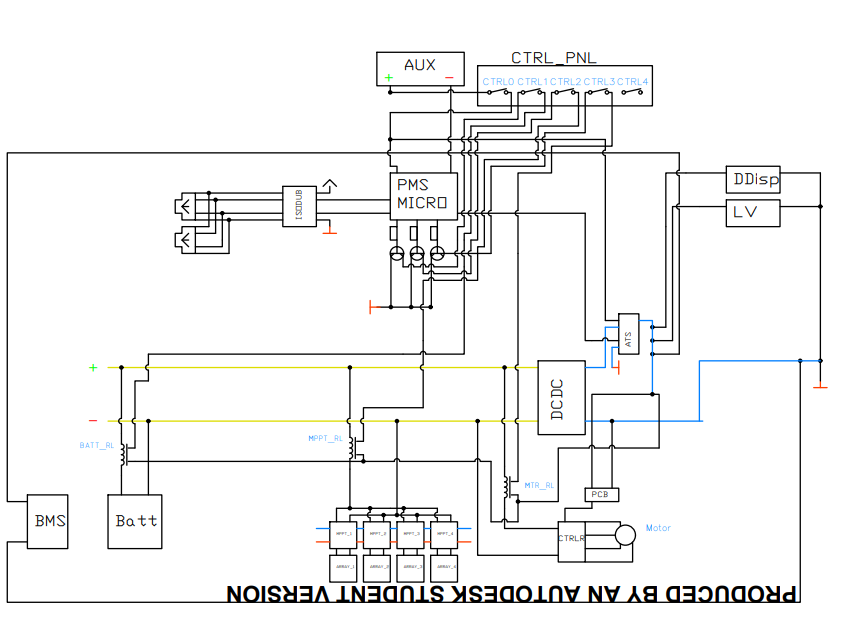

The high voltage architecture is the heart of the vehicle, responsible for ensuring
how things get powered, how things start up and shut down, and the correct management
and distribution of power. It takes into account regenerative braking and where that
power goes, as well as the two primary power sources: the supplementary battery and
the main battery. Proper design and implementation of the high voltage architecture
is critical for the safe and efficient operation of the vehicle.
Design Process
Iteration 0
The primary iteration of the electrical architecture provided a foundation for further
development, but it had several limitations. The design did not take into account the
start-up phase and detailed diagram of how the vehicle would start up and shut down.
Additionally, it did not consider the convenience of the driver, as there were multiple
switches to turn on the entire vehicle. Furthermore, the initial design
only had one motor controller instead of two and did not include an E-stop.
Despite these drawbacks, the primary iteration gave the team a solid starting
point and an understanding of the placement of components in the electrical
architecture.

Iteration 1
Grigor and I worked on the second iteration of the electrical architecture,
where we focused on having only one start button. Using normal vehicles as an inspiration, the MCU
constantly powered on like a normal vehicle, it would only be powered when
necessary to receive the "on" signal from the driver. However, this approach
drained the supplementary battery quickly and was not feasible for prolonged periods.
The HV line was initially powered at 110 volts, providing the DCDC converter with a
nominal input. However, this was later changed to 96V to allow the motor controller
to have a nominal voltage input. In this iteration, the grounding was done through
the chassis, which is not ideal for EV vehicles, as everything should have a
floating ground. There were two grounds in this version, which is also not ideal.
Although this iteration had its shortcomings, it provided us with a better
understanding of what needed to be changed and improved in the subsequent
iterations.
Iteration 2 (Current)
This iteration of the electrical architecture for the vehicle complies with
regulations and ensures the main power consumption comes from the two motor
controllers. To stabilize power, two precharge circuits are attached to the
motor controllers. The team had to take into consideration circuit isolation by
using a relay and Mosfet configuration in the power management board. They also
had to ensure the microcontroller on the power management board wouldn't face a
power blip by adding capacitors. Additionally, a normally closed relay was added
to ensure the supplementary battery would always remain connected in an "off state"
and a normally open relay was added to ensure the primary battery would only be
connected when prompted to. The electrical architecture also includes an HV switch
and an E-stop switch. Currently, the team is working on the firmware side of
things, specifically enabling the MPPT contactor to also be normally closed.
This design does meet ASC standards as of 2024.